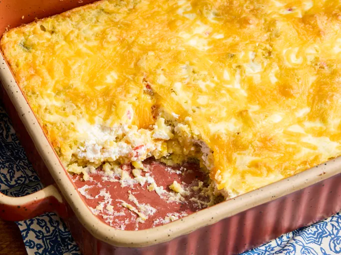

Jiffy Corn Casserole

Description
Beautiful savory and sweet casserol for easy weeknight dinners for the whole family
Ingrediants
- ¼ cup butter
- 1 large onion, diced
- ½ large green bell pepper, diced
- 1 (4 ounce) jar chopped pimento peppers
- 2 large eggs
- 1 (8 ounce) package Jiffy corn muffin mix
- 1 (4 ounce) can diced green chiles
- 1 (15.25 ounce) can whole kernel corn, with liquid
- 1 (15.25 ounce) can creamed corn
- 1 pint sour cream
- 1 cup shredded Cheddar cheese
Directions
- Preheat oven to 350 F. And grease a 9x13 inch baking pan
- melt butter in a pan over medium heat and add onion, bell pepper, pimento peppers. Saute until tender
- combine eggs, corn muffin mix green chilies, whole corn, and creamed corn in a large bown with pan mix
- Stir together and pour into prepared pan for baking
- Drop sour cream by the spoonful on top of mixture. Cover with shredded cheese.
- Bake in preheated oven about 45 min and enjoy!
Home